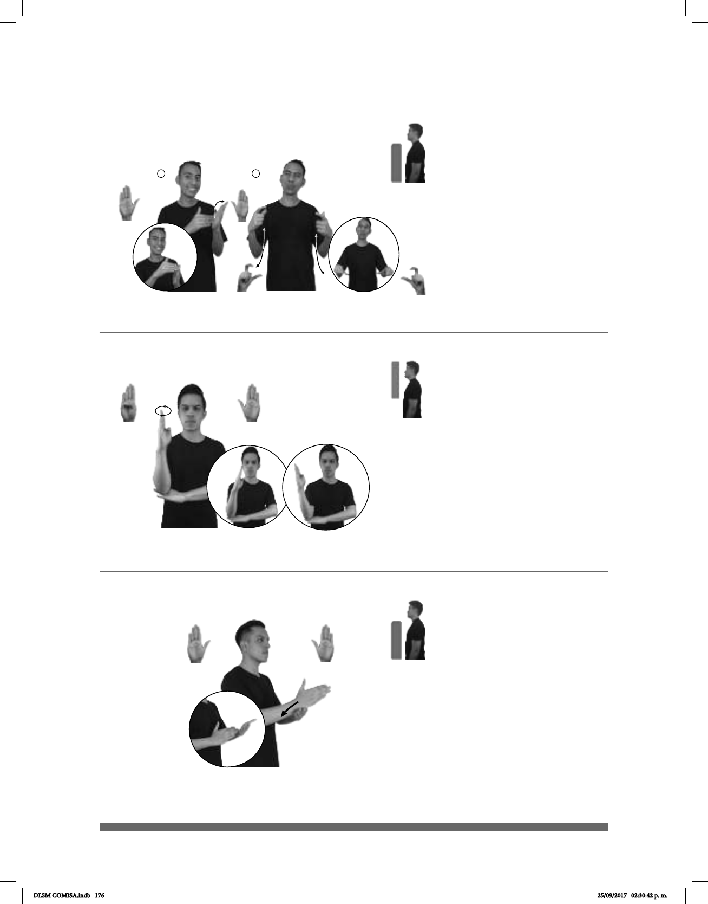

176
(B-P 196)
dm-MARÍA LOTERÍA GANAR AHORA MILLONARIA pro-ELLA
María ganó la lotería, ahora es millonaria.
Seña: SC: I. SB; II. SS
I. MD B-P.11, MB B-P.2;
II. Q.5
I. MD palma hacia la
izquierda, MB palma hacia la derecha; II.
Palmas hacia el centro.
I. MD y MB a la altura del
pecho. MD sobre MB; II. Del pecho a la
cintura.
I. Los dedos de MD simulan
un salto hacia arriba sobre la palma de MB;
II. Recto hacia abajo mientras las manos se
agitan.
Ceño fruncido, labios
protruidos.
adj. Que tiene más de un millón
de pesos en dinero y en riquezas.
Seña: SB
MD y MB B-P.2
MD palma oblicua
hacia adentro y hacia la izquierda.
MB palma oblicua hacia hacia
afuera y hacia la derecha.
A la altura del pecho.
MD sobre MB.
MD recto hacia
abajo.
sust. f. Cada una de las
dos partes iguales en que se divide
algo.
(B-P 197)
(B-P 198)
FERIA TAMAL DÓNDE LUGAR MILPA ALTA
allá
La Feria del Tamal es en Milpa Alta.
pos-MI JEFE él-PAGAR-a-mí SUELDO MITAD
Mi jefe me pagó la mitad del sueldo.
Seña: SB
MD B-P.1, MB
B-P.2
MD palma hacia la
izquierda, MB palma hacia arriba.
MD A la altura del
rostro. MB a la altura del plexo.
La MD se mueve
formando círculos.
Delegación ubicada en
el sureste de la Ciudad de México.
DLSM COMISA.indb 176 25/09/2017 02:30:42 p. m.